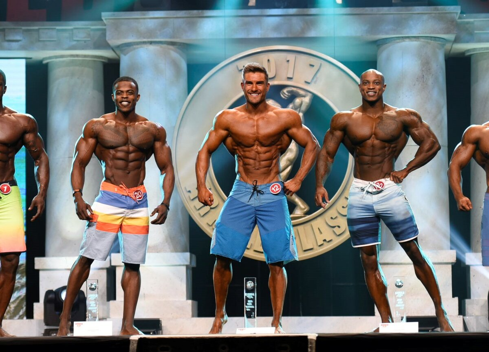
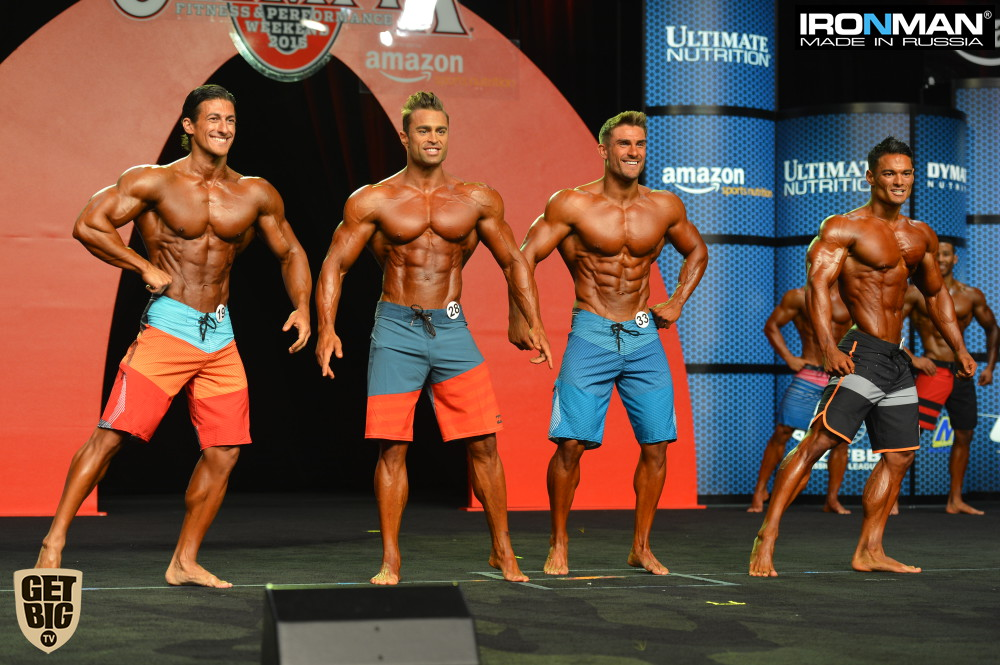
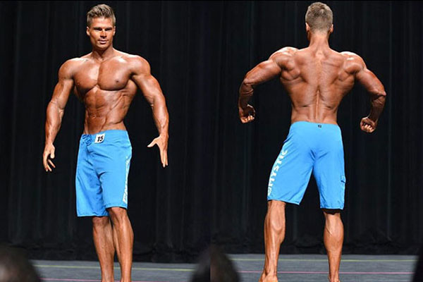

Менс Физик
В 2012 году IFBB ввела новую мужскую категорию в бодибилдинге:men’s physique. Она направлена для мужчин, которые используют силовые тренировки, поддерживают себя в форме, соблюдают здоровую сбалансированную диету, но предпочитают развивать меньше мышечных объемов, но все же иметь спортивное и эстетическое телосложение. В основном акцент ложится на красивые пропорции, а в частности выделяется широкая спина, узкая талия, форма дельтовидных мышц, проработка верха грудных и глубина пресса.
В России эта номинация введена в 2014 году и получила местное название пляжный бодибилдинг. Данная категория нередко подвергалась критике в связи с мнением якобы большинство атлетов имеют нетрадиционную сексуальную ориентацию. На деле источником критики в основном являлись атлеты категории бодибилдинг у которых возник когнитивный диссонанс, ведь новая категория по их мнению требовала намного меньших объёмов, а следовательно меньших затрат совсем непропорциональных к немалой популярности данной категории. Поэтому "качки" и пустили слух о ориентации данных ребят, хотя сами не чуть не меньше снимаются в эротических журналах, порнофильмах в том числе и для "геев". Одним из ярых противников категории men’s physique является Дмитрий Голубочкин. На момент 2016 года культуризм в России по прежнему разделён на два лагеря, но для обычных зрителей "пляжники" и дальше набирают популярность.
Примечательные атлеты
- Денис Гусев
- Сергей Миронов
- Сергей Бойцов
Правила номинации Пляжный бодибилдинг
РОСТОВЫЕ КАТЕГОРИИ
В пляжном бодибилдинге в настоящее время существует две категории: 178 см и св. 178 см со следующими весовыми/ростовыми критериями для участников:
- до и включительно 170 см
- максимальный вес (в кг) = рост (в см) –100 (+ 0 кг), например: при росте 170 см max вес 70 кг
- до и включительно 174 см
- максимальный вес (в кг) = рост (в см) –100 (+ 2 кг), например: при росте 172 см max вес 74 кг
- до и включительно 178 см
- максимальный вес (в кг) = рост (в см) –100 (+ 3 кг), например: при росте 175 см max вес 78 кг
- свыше 178 см
- максимальный вес (в кг) = рост (в см) –100 (+ 4 кг), например: при росте 180 см max вес 84 кг
-
спортсмены ростом свыше 190 см
- максимальный вес (в кг) = рост (в см) –100 (+ 5 кг), например: при росте 191 см max вес 96 кг
ПОРЯДОК ПРОВЕДЕНИЯ СОРЕВНОВАНИЙ
Раунд отбора (если в категории больше 15 участников).Все участники становятся в линию по порядку номеров, затем по команде комментатора, в группах по 5 человек, выполняют повороты на 90 градусов (лицом к судьям, левым боком к судьям, спиной к судьям, правым боком к судьям, лицом к судьям). После этого участники покидают сцену. Судьи определяют 15 сильнейших.
Во время объявления комментатором номера, имени, страны, города, клуба и пр., каждый спортсмен выходит на середину сцены, останавливается, и становиться лицом к судьям. Затем разворачивается и принимает позу «спиной к судьям». Затем снова поворачивается лицом к судьям. После этого становится на задний план сцены. Вторая часть раунда - «Сравнения». Затем участники вызываются выполнять повороты на 90 градусов (лицом к судьям, левым боком к судьям, спиной к судьям, правым боком к судьям, лицом к судьям) по запискам судей (не более 6 человек одновременно).
СОРЕВНОВАТЕЛЬНЫЙ КОСТЮМ ДЛЯ ВСЕХ РАУНДОВ

Пляжные шорты, которые должны соответствовать следующим критериям:
- длина шорт – на уровне середины колена
- материал и цвет на выбор участника
- не допускаются обтягивающие шорты или шорты из лайкры
- участники выступают без обуви.
Требования к внешнему виду:
- любые украшения и аксессуары запрещены
- для тела и для лица разрешается использование только официально разрешенного грима
- театральный грим ЗАПРЕЩЕН